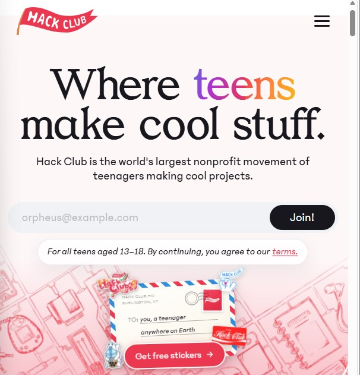
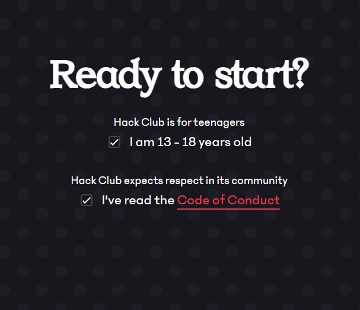
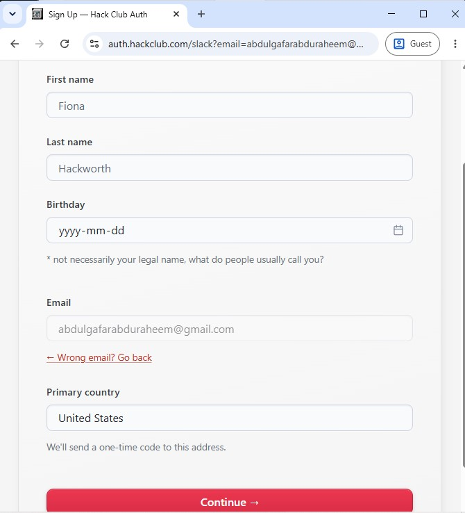
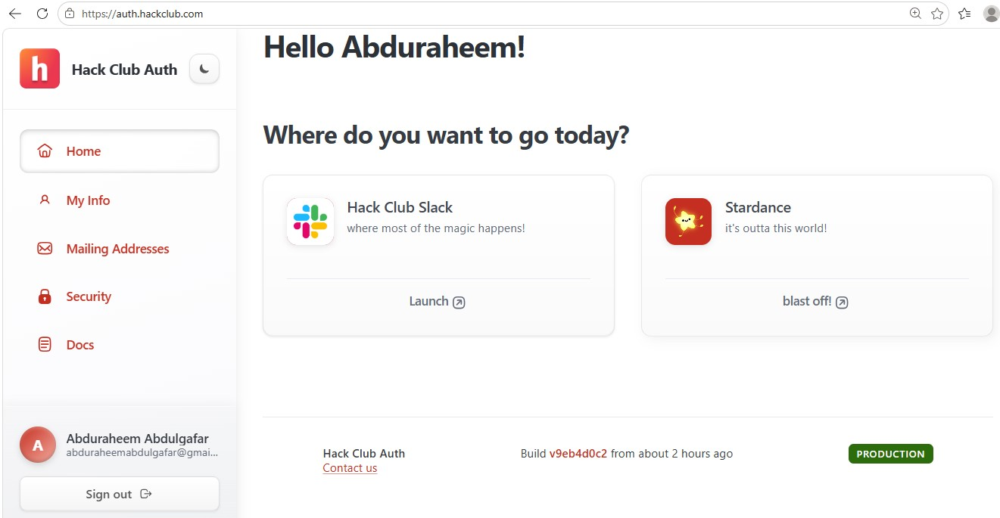

01
Hackclub
Creating an Hackclub account
The First step to being an HackClubber is creating an hack club account. Open your preferred web browser and search "hackclub.com"

Input Your functional Email and then click join
This guide will help you get started with Hack Club and provide resources for learning, building projects and Unlocking cool rewards
Hack Club is a community of young people learning to code by building real things. No grades. No gatekeeping. Just a blank file and a good idea.
01 — The path
Hackclub
The First step to being an HackClubber is creating an hack club account. Open your preferred web browser and search "hackclub.com"

Ready
You would see some sort of welcomig page. Click on the arrow button on the right. Take a moment to go through the things you see, some infos about slack, some prizes and tool. Incase you see anything that intersts you, feel free to click on it, then resume the registeration once you are satisfied. Other than that you can just click on the arrow button until you reach the last last page about age and agreements

Your details
Hackclub needs to know who you are. Fill in your details with the appropriate information. Afterwards Click on the continue button. A verification code will be sent to your email to confirm your email. Input the Code and Boom. You have successfully created an hackclub account

Almost there
After the complete verification you should find yourself at the landing page that looks like something like this

If the sidebar menue does not appear then its probably because of your screen size. Click on the three line button somewhere in the top left to make it appear. There's basically nothing important here. In the sidebar you can click on Mailing Adress to save you home Adress just incase hackclub needs to ship you sth like a sticker, a T-shirt or any other gift you win
Aside this there's nothoing really important here. The main deal is SLACK